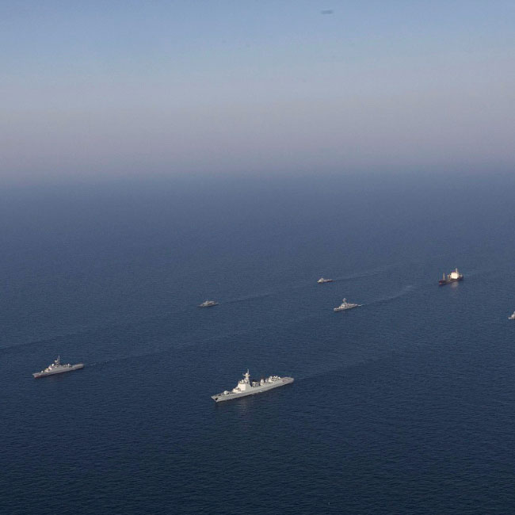

Ten Conflicts to Watch in 2024
2023 draws to a close with wars burning in Gaza, Sudan and Ukraine. In 2024, conflicts in some of the world’s most treacherous flashpoints risk sparking a bigger blaze.
2023 draws to a close with wars burning in Gaza, Sudan and Ukraine. In 2024, conflicts in some of the world’s most treacherous flashpoints risk sparking a bigger blaze.
The Israeli-Palestinian conflict has entered a horrific new stage with the Hamas-led attack on 7 October and Israel’s subsequent campaign in Gaza. The Israeli campaign has been devastating, levelling much of the strip and killing upward of 18,000 Palestinians. It is difficult to imagine a way out, but the starting point is to recognise that attempting to finish off Hamas will likely finish off Gaza. The cost has already been far too high. Another truce is imperative.
Neither Iran nor the U.S. and Israel want a regional confrontation, but there are plenty of ways the Gaza war could spark one. The most perilous flashpoint is the Israel-Lebanon border. Since 7 October, Hizbollah and Israel have traded missile fire at a steadily increasing clip. The strikes by Iran-backed groups on U.S. forces in Syria and Iraq add to the tensions, as do the attacks by Yemen’s Houthi rebels on Red Sea shipping.
The war between Sudan's army and the paramilitary Rapid Support Forces has left thousands of people dead, displaced some 7 million more and brought Sudan to the brink of ruin. The spectre of genocide again haunts the western region of Darfur. Yet diplomacy up to now has been half-hearted. Sudan’s collapse could reverberate for decades throughout the Sahel, Horn and Red Sea regions.
Ukraine’s counteroffensive has stalled. The 600-mile front is barely moving. Little suggests for now that negotiations can offer a way out. Russia’s apparent demands – surrender and a more pliant government in Kyiv – are understandably rejected by Ukraine. Meanwhile, there are signs that the West's support for Kyiv is wavering. The stakes are high: if Russia succeeds in subduing Ukraine, it may go after other former Soviet republics in the future.
A rebel offensive in Myanmar's mountainous north east poses the biggest threat yet to the junta that seized power nearly three years ago. Already, the military was battling resistance to the coup in the lowlands, subjecting the Burman majority there to the same brutal tactics it has long used against minorities. Many ethnic armed groups had stayed out of the post-coup fray, but some have now joined hands, sensing disarray in Naypyitaw. For now, however, the country’s various resistance elements are unlikely to unite, allowing the junta to hang on.
Ethiopia started 2023 with good news as the war in Tigray wound down, but new threats have emerged. The federal government faces rebellions in Amhara and Oromo, two of the country’s most important regions. Tensions are also rising with neighbouring Eritrea. Miscalculation on that front could lead to open hostilities.
In July, officers in Niger mounted a coup, cementing military rule across the Sahel following similar takeovers in Mali and Burkina Faso. The coups have strained these countries’ relations with West African neighbours, as well as Western powers. In Mali, authorities increasingly lean on Russia and the mercenary Wagner Group for support. So far, the juntas have some popular backing, due partly to their anti-Western rhetoric, but they have yet to make headway fighting jihadists or solving the region’s other problems.
Haitians hope that a Kenya-led force set to arrive in early 2024 will tackle the hyper-violent gangs that control much of the capital, Port-au-Prince, as well as surrounding areas. The mission's goal is to bring gangs to heel and pave the way for elections. But politics are a hindrance: the unpopular acting prime minister has resisted forming a cross-party coalition and might seek to use the force to consolidate his own power.
In September, Azerbaijan staged a lightning offensive in Nagorno-Karabakh, displacing over 100,000 ethnic Armenians from the enclave into Armenia. Talks about calming Armenian-Azerbaijani relations have made progress, but points of contention remain. One is border demarcation; another is the land corridor Baku wants to the Nakhchivan exclave to ease trade with Turkey.
President Joe Biden and Premier Xi Jinping met in November, seeking to reset U.S.-Chinese relations. The summit went well, but the big powers’ interests collide in the Asia Pacific, and Taiwanese elections and South China Sea tensions could bring matters to a head. The rivalry shows no sign of abating, with hawks on both sides speaking of zero-sum competition and even normalising talk of war.
p>Read our full analysis